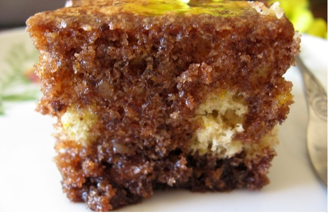

Hello, World! Let's learn abaut HTML and CSS
Hello, i'm Stoil 🍻
I love HTML and CSS.
The best Cake

Ingradients
- 1. 5 eggs (250 gr.)
- 2. 1 tea cup (160 gr.) sugar
- 2. 1 ½ tea cups (300 гр.) flour
- 3. 2 teaspoons (10 gr.) baking powder
- 4. 1 tea cup (115-120 gr.) crushed walnuts (almonds, hazelnuts)
- 5. 1 ampoule of rum essence
Directions
- The flour is mixed with baking powder.
- Beat the eggs and sugar until fluffy - they should turn white and increase in volume.
- Sequentially add the flour (sift directly over the mixture) and nuts.
- The resulting dough is poured into a pan greased with oil and sprinkled with flour.
- Bake in a preheated oven at 170 ° C, working with upper and lower reotan, without a fan. Baking took me 20 minutes.
- Readiness can be checked with a stick - stuck in the dough should come out dry, without sticky dough.
For syrup
- 1. 2 teaspoons (320 gr.) sugar
- 2. 1 teaspoon (170 gr.) water
- 3. 3 tablespoon cocoa
- 4. 125 gr. butter
- 5. 3 teaspoons (45-50 mililiters.) cognac (rum, liqueur)
Directions
- All products are mixed in a suitable container (small saucepan).
Heat until the sugar and butter are melted and the mixture boils.
You can check the recipe here
Stoil Valkov
My favorite five movies
- Comedy - Bad Boys for Life

- Action - BloodShot

- Serial - Game Of Thrones

- Documentary - Citizenfour

- Fantasy - UnderWorld

My Favorites
This is page about my favorite music and food
TOP SONGS
- "Decadence" by Disturbed
- "Bring Me To Life" by Evanescence
- No Fear by The Rasmus
- Big Blue Dress by Cranius
- Blue bird by Ikimono-gakari
FOOD
- Sushi
- Ramen
- Casserole with pork
- Cake Thirsty nun
- Potatoes with cheese
Created by: Stoil Valkov